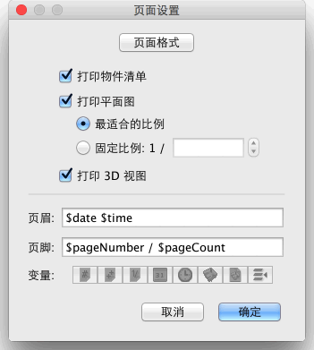
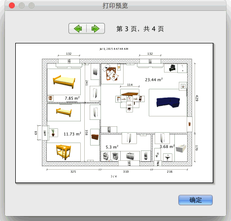

| 打印家居模型 | |||
如果您要打印当前的家居模型，请在菜单上选择文件→打印。 默认情况下，Sweet Home 3D 打印的内容为当前家居模型的物件列表、平面图和当前显示在 3D 视图中的内容，并使用默认的纸张大小、页边距和方向。如果您想要更改这些参数，请使用文件→页面设置... 菜单项。  在页面设置窗口中，您可以单击页面格式按钮修改页面的大小和方向。您也可以设置是否打印家居模型的物件列表、平面图和 3D 视图中的内容。如果您不想使用软件自动计算出的最适合纸张大小的比例进行平面图的打印，请在“固定比例”中指定您想要的数值。
为防止逐键输入变量名的过程中发生错误，请使用页眉和页脚输入框下面的变量按钮输入变量。由于半角的“$”字符被保留作了变量名的标识符，故如果您想在打印时直接输出一个“$”，请输入“$$”（两个半角“$”）。 打印家居模型之前，您可以使用菜单上的文件→打印预览... 在屏幕上预览您的页面设置。  您可以在“打印预览”窗口中逐页预览家居模型打印的效果。如要切换预览的页面，请单击顶部的箭头或按键盘上的方向键。 |
|